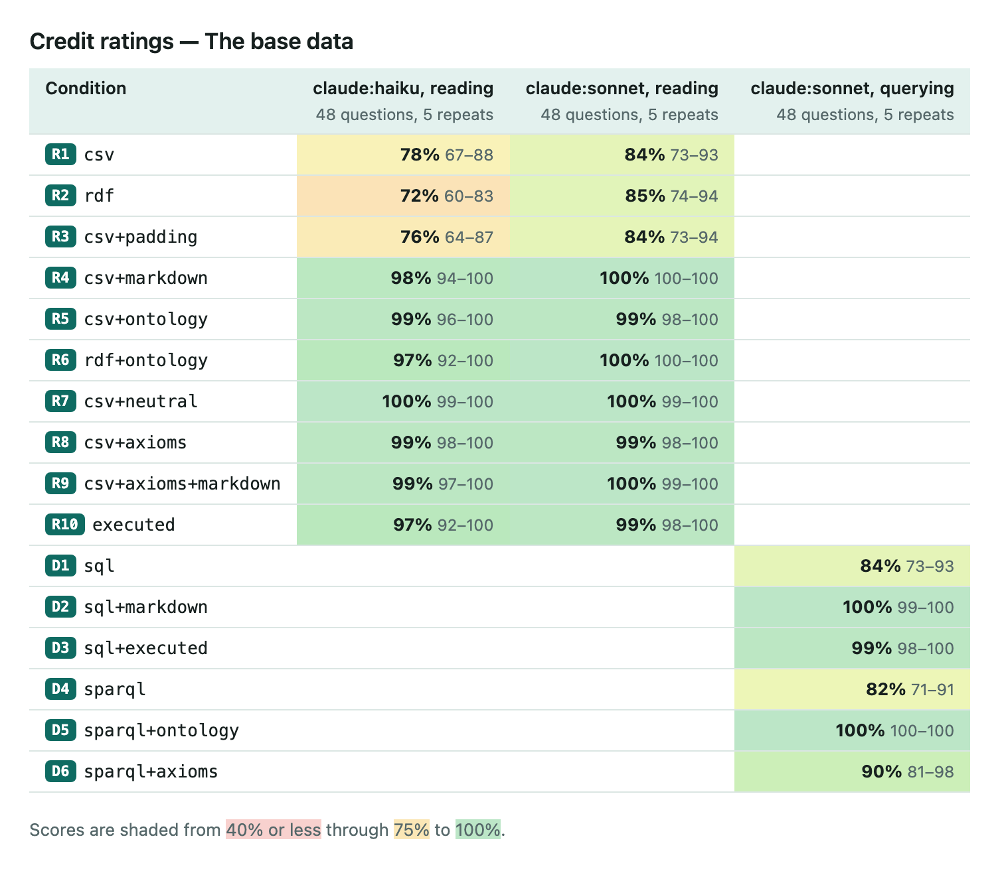
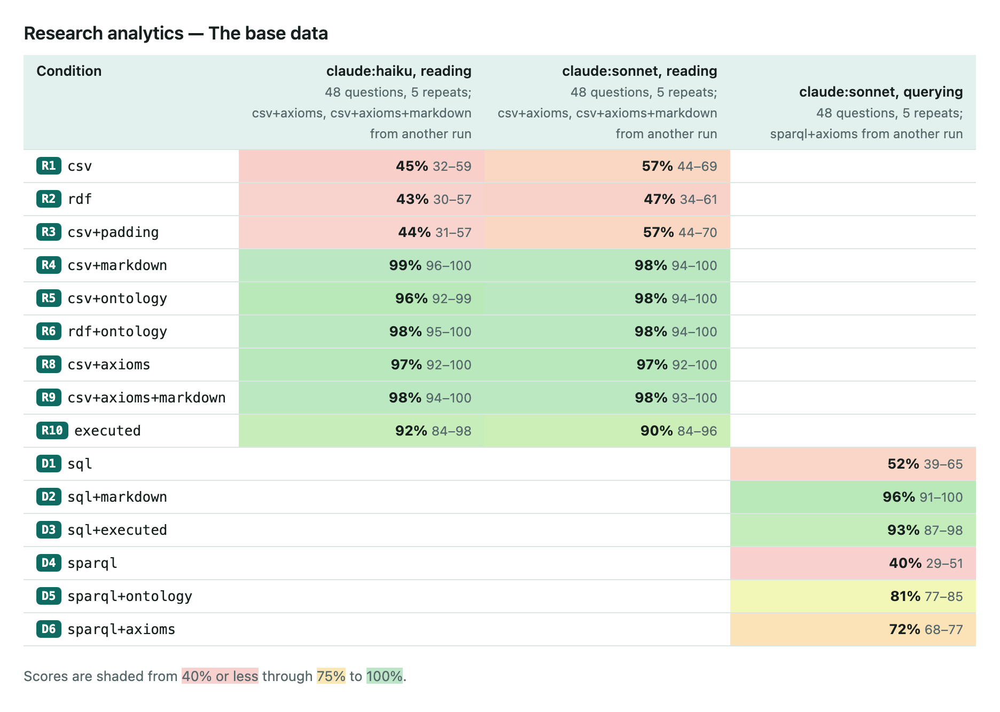
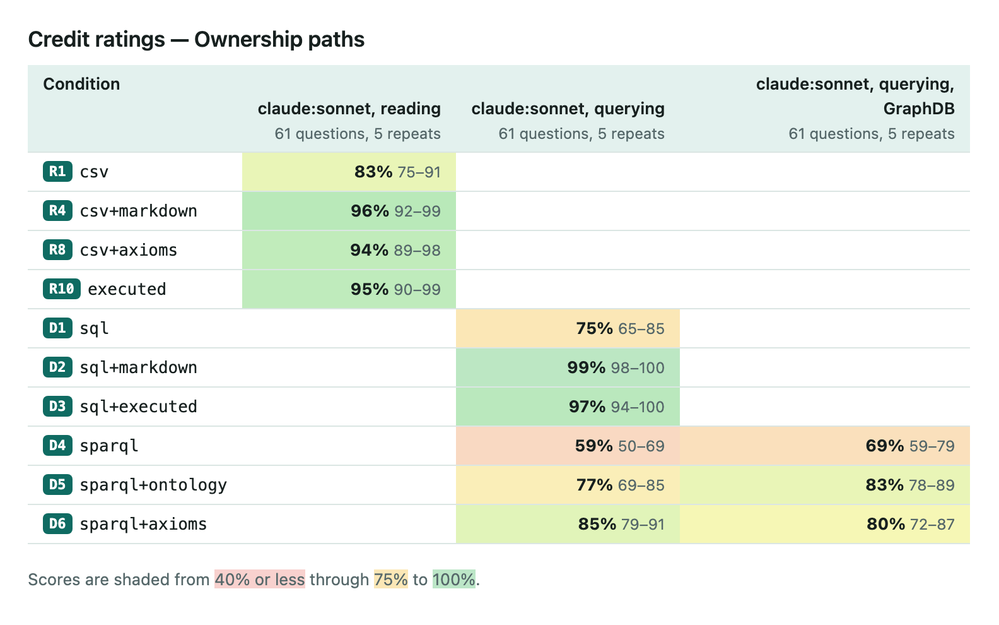
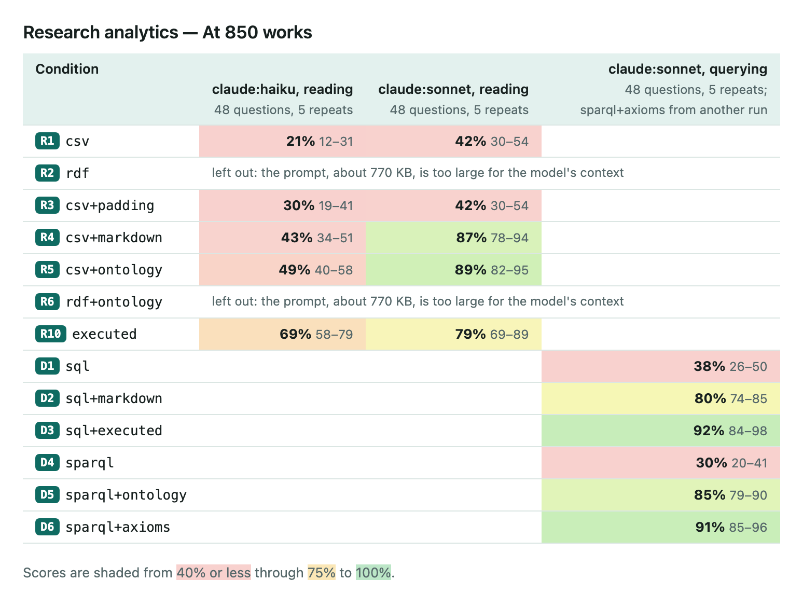

What does an LLM need to know about your data? Climbing the semantics ladder
Give an LLM a spreadsheet and ask it a question. How much better does it do if you also tell it what the data means? And does it matter how you tell it: a Markdown glossary, an OWL ontology, a set of rules?
I spent the last couple of weeks running experiments to find out. The short version: written-down meaning helps a lot, but only where the meaning is local to your data. The format it comes in barely matters to the model. It matters a great deal to the people who have to maintain it.
Everything is on the Semantics ladder site: the data, the questions, the ontologies, every run and every answer.
Where this started
The trigger was Andrea Splendiani's article Ontologies for AI in practice / part I. He took a family-tree question and walked it up a ladder: raw data, then data plus definitions, then curated data, then rules, checking at each step what the LLM got right.
His conclusions were clear:
Simple text definitions give the biggest bang for the buck, while minor data curation has little impact. Putting the data in RDF helps people understand it, by surfacing assumptions that mislead humans and LLMs alike. A well-curated knowledge graph doesn't necessarily change the answers, but it improves trust and consistency. And ontologies give LLMs an edge by telling them what things mean in a specific context.
I liked the idea a lot, and wanted to see whether it holds up with more questions, more repeats and a domain where the meanings are less obvious than "parent" and "sibling". So I built a small lab around it.
The set-up
Two invented domains, so that no model could answer from memory:
- Credit ratings. Companies, their debt instruments and rating actions, with the cryptic codes real extracts have (
LTIDR,RWN,WD). - Research analytics. Works, authors, institutions and citations, shaped like OpenAlex.
Each domain hides traps of the kind an analyst knows without saying. A rating holds until the next action, so the latest row isn't the answer for a past date. An outlook change isn't a downgrade. Two records with the same LEI are the same company. A preprint and its published version are one work. A record from the QA system is a test, not a real issuer.
Some of these are general knowledge, which a good model has from training. Others are local: rules this particular dataset sets for itself, which no model could guess. That distinction turned out to be the most important one.
Each domain has about 48 questions, graded by code against keys computed from the data wherever possible. I asked them to Claude Sonnet and Haiku, five repeats each, under a ladder of conditions. The main ones:
csv: the data only.rdf: the same facts as RDF triples, with no ontology.csv+padding: the data plus an unrelated glossary of the same length, on the same subject.csv+markdownandcsv+ontology: the data plus the definitions, as a Markdown glossary or as an ontology in Turtle.csv+axioms: the data plus OWL and SHACL axioms, with all the prose removed.executed: the data after the rules have been run on it, with no definitions.
The padding condition matters more than it looks. A longer prompt full of domain words might help on its own. If it did, any gain from the ontology could be length, not meaning. The Method page has the full list, including the querying conditions I come back to below.
What helps: meaning that's written down
Here are the scores on the credit data:

And on the research data:

With the definitions, in whatever form, both models land between 96% and 100% in both domains. Without them, they get 78–84% on credit and only 45–57% on research.
The padding adds nothing, so it's the meaning that does the work. And the gain tracks how local the domain is. Sonnet already knows most credit conventions, so the definitions only fill a few gaps (+16 points). The research data has more conventions of its own, such as which affiliation gets the credit or whether a retracted work counts. Without them the model is guessing, and the definitions are worth +41 to +53.
Two more things stood out. The weaker the model, the more the definitions are worth: with them, Haiku catches up with Sonnet. And RDF on its own never helped. It holds exactly what the CSV holds, in a more verbose form, and sometimes cost a few points.
What doesn't matter: the format
This is the result I expected to be most controversial.
Markdown, SKOS in Turtle, and the same definitions in both forms all scored within a point or two of each other. More surprisingly, the axioms alone (OWL classes and SHACL rules, with every comment and definition stripped out) did about as well as the prose: 99% on credit and 97% on research, for both models. The model reads logic perfectly well.
So the model doesn't care what format the meaning comes in. But people do. The glossary has to come from somewhere. It has to be written once, kept consistent, versioned, owned, checked against the data, and shared by everyone who uses it. That's what a knowledge graph is for.
In the lab, the Markdown is generated from the Turtle, so the two can never drift. I think that's the pattern in miniature: keep the meaning in RDF, and render it as whatever the model reads best.
What can go wrong: ontologies have opinions
Two small findings worried me more than any score.
First, one sentence in the credit ontology called the foreign-currency rating "the headline rating". A company with three ratings was asked "is it investment grade?", and the honest answer is "which one?". With that sentence, Haiku answered a flat "No" in most repeats, quoting the sentence back. With one neutral rewording, it got it right five times out of five.
Second, an axiom is followed to the letter, mistakes included. In an early version I declared test records a subclass of entity, while the prose said they describe no real entity. With the axioms alone, the model counted them as entities, every time. The error was mine, and it reproduced it faithfully.
An ontology carries its authors' emphasis as well as its meaning. If you give one to a model, you need to review it and test it against the data, the way you'd test code.
Read the data, or query it?
The obvious objection: nobody pastes real data into a prompt. The model should write SQL or SPARQL, and let the database do the counting. So I tried that too. The model never sees the rows: it gets a schema, writes queries for up to eight rounds, and answers from the results.
At the sizes I tried, reading held up better than I expected. At 300 companies, with the definitions, reading scores 95% and querying 97–99%. Querying pays off mainly on long lists, where one missed item fails the answer.
The research data tells the same story. With the definitions, SQL scores 96% against 98% for reading. Without them, both get about half the questions right (52% and 57%).
So the definitions mattered just as much when querying: +19 points for SQL on credit, +45 on research. A query is only as good as the model's grasp of what the columns mean. Querying doesn't remove the need for an ontology.
What about graphs? I added ownership chains four to six levels deep, the kind of question a graph store should win. It didn't:

- With the definitions, SQL got every path question right in every session. SPARQL got 42% of them on rdflib and 60% on GraphDB.
- The SPARQL failures were mostly about how the model worked: paging through whole classes, or giving up after a few rounds.
- The research data showed the same thing. SPARQL with the ontology scored 97–98% in four sessions out of five, then collapsed to 17% in the fifth, returning almost no answers. SQL never dropped below 96%.
- With the chains precomputed into an
ancestorstable, SQL got every path right, every time.
The graph's advantage is following links of any depth at query time. Once the rules have computed the chains, a plain table does as well. And in my runs, the difference between SQL and SPARQL was less about accuracy than steadiness.
At ten times the size (850 research works, too big to read comfortably), the picture shifts:

Reading with the definitions drops to 87–89%, because the model keeps the meaning but loses the arithmetic. Querying with the definitions does no better. What works is querying data where the rules have already run: 92% for SQL over the executed tables, and 91% for SPARQL over the graph after its SHACL rules.
So querying is about size, and the ontology is about meaning. They solve different problems.
Rules beat reading, if you keep the receipts
The executed condition, where the rules have already been applied (duplicate records merged, test records dropped, hierarchies rolled up), got most of the way without any definitions: +15 to +19 points on credit, +34 to +46 on research.
But it fell short in an instructive way. Merging a preprint into its published version means you can no longer ask about the preprint. Tables that apply the rules without stating them can't answer "why?". Curation decides what the data can still answer. A store that keeps the records it merged, and the rules it ran, answers more.
A pinch of salt
These are early results. They're measured carefully, but the scope is small.
There are two invented domains, with about 50 questions each and ontologies of about 50 terms. Only two models were tested, both Claude, and the datasets are mostly small enough to read. I also wrote the questions myself. So the findings are indicative, not general. They show what happened here, and suggest what might hold elsewhere. The Conclusions page lists where to dig next.
The biggest gap is size. A real enterprise ontology has hundreds or thousands of terms, and a production dataset is far too big to read. At 2,000 terms, the definitions alone would fill most of a context window, before any data.
That's where I think knowledge graphs come into their own, and not as a format for the model to read. They're where the meaning is organised and stored as it grows and changes over time: versioned, owned, checked against the data, shared across teams. And they make the hard part tractable: deciding which bit of the ontology should become context for a given question.
A graph knows which concepts a table's columns use, what those depend on, and which rules touch them. Selecting the right slice from that is a retrieval problem, and the structure is what makes it cheap. It's also where the rules can run, upstream, so the model queries results instead of re-deriving them.
What I'd take away
Most of this agrees with Andrea's conclusions. Simple definitions were the big win here too, and the gain came from meaning specific to the data's context. RDF on its own didn't help the model, but that fits his point: its value is to the people who build and check the data, not to the LLM. The one difference is curation. Running the rules over the data, rather than tidying it up a little, did change the answers, especially once the data grew.
- Write the meaning down, especially the local rules. That's where the gain is: +15 to +50 points, depending on how much of your data's meaning is its own.
- Don't worry about the format you give the model. Do worry about the format you keep it in.
- Review your definitions like code. A slanted sentence or a wrong axiom will be followed faithfully.
- Run the rules upstream when the data gets big, and let the model query the result.
The model reads Markdown just fine. But someone has to keep that Markdown true as the data and the business change. I think that's still the job of a knowledge graph, and probably a bigger one than before.
The code, data and every run are on GitHub. Thanks to Andrea Splendiani for the article that started this. I'd love to hear from anyone who has tried something similar, especially at real enterprise scale.